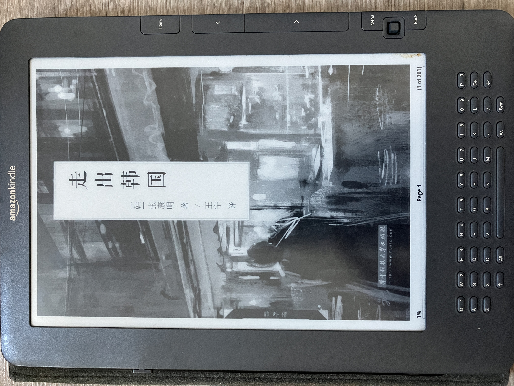

因為討厭韓國-張康明(布克文化出版事業部)

小弟開始對於韓國有深刻的印象，就是在我外派至越南工作半年，發現韓國在當地的影響力無所不在，加上當時的韓流當道，所以就開始對韓國有所改觀，發現韓國確實有許多可取之處。再加上後來又跟女王去了兩次首爾，發現了韓國的美好，也發現在首爾旅遊溝通上也沒有太多的隔閡，更加深對這個國家的好感。 。
最近有新聞在報導有關韓國啦啦隊，報導韓國啦啦隊在韓國的待遇，不僅薪資低，還只能當配角，也不能接演藝圈的的工作，這樣惡劣的工作條件，也終於讓台灣有可趁之機，挖走許多韓國有名的啦啦隊隊員。就在這同時，我突然瀏覽到這一部電影-因為討厭韓國，因此就開始有想要看這部電影的原著小說的衝動。後來，由於紙本書已經絕版，所以我就在網路上下載了這本小說。
小說中的女主角桂娜，從小就出生在家境不好的家庭裡，冬天總是有刺骨的寒風灌進家裏，即便後來女主角認真讀書，考上不錯的大學，也只能找到還可以的工作，每天還要擠擁擠的電車，於是主角心中開始有了要移民的想法。
主角後來去澳洲自力更生，在異鄉取得學位，甚至還取得了澳洲的居留權，也因為取得了居留權，她在韓國的地位也徹底翻轉。原先她家的家世並不好，而他在韓國的男友卻家世不錯，由於韓國還是有很強的階級觀念，這也間接成為她與男友分手的原因之一。
在韓國，桂娜是一個無名小卒，以她的家世還有學歷，再怎麼努力都沒有翻身的可能。可是在澳洲，人們沒有這樣的階級觀念，工作也沒有貴賤之分，也因此靠著自身的努力學英文，在當地打拼，都有出頭的機會。所以，小說裡面有一句話”大韓民國只愛他自己，不愛他的國民”，不僅道出韓國國內種種不公平的環境，也道出韓國人不得不離鄉背井，去異國生活的無奈。他們不是不愛韓國，只是韓國不愛他們罷了。
延伸閱讀:
赤字迷思-現代貨幣理論和為人民而生的經濟(史蒂芬妮‧凱爾頓)另外，美國購物代運可參考:
https://a1253247.blogspot.com/p/hopshopgo-vs-spexeshop.html
對板球有興趣的可參考:
https://a1253247.blogspot.com/2022/05/cricket-line-written-by-admin-24-10.html
對生活飲食有興趣，可參考: